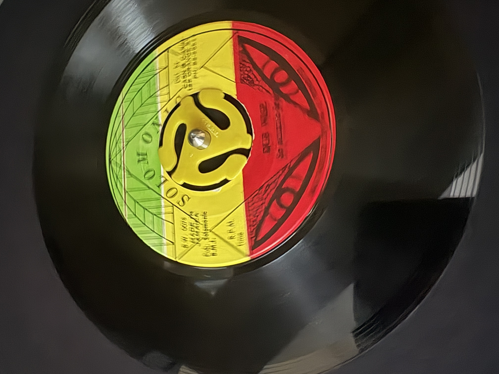

Archive & Logs

Artifact:
Solomonic 7" Pressing (Jamaica). Recorded March 2026.
Technical Specifications
Label:
Solomonic (B.W. 0078)
Format:
45 RPM Vinyl
Side B:
Dub Wise
Documentation
Mom’s Networking Notes (1969)
System Protocol
Static archive. Zero-JS. Minimalist footprint.